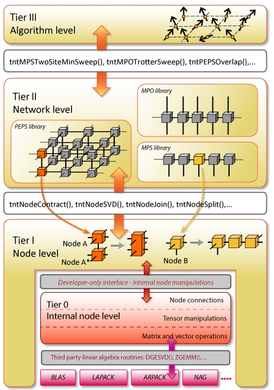

Tensor Network Theory (TNT) provides efficient and accurate methods for simulating strongly correlated quantum systems. It does this by encoding, as a network of tensors, the many-body wave function representing the system and the operators that act on it. TNT algorithms can then be broken down into a series of tensor operations.
The TNT library contains highly optimised routines for manipulating tensors in the network, which are completely general and do not depend on any network geometry. It also contains routines that can be used to build the most common TNT algorithms, with complete versions of these algorithms, either to use as they are, or modify for your own purposes.
The library is being developed in the group of Prof Dieter Jaksch at the University in Oxford. For more information about the group and recent publications, please visit the group website.
We are receiving core support from SESC at STFC Rutherford Appleton Laboratory, and have received University dCSE support from Dr Chris Goodyer at NAG.
The library routines are organised in a three tier structure, shown right.

Tier I contains routines for manipulating the tensors that represent the nodes in the network. These routines are completely general and do not depend on network geometry. They include routines for modifying the tensor values through operations on the tensors, changing how the nodes are connected to one another in the network, and getting certain values (e.g. diagonal values) of the tensors. All these routines are contained in the core library libtnt.a, and they can be used to build your own custom TNT algorithms, or in fact use in any other application where tensor manipulations are required. The figure shows two example operations on network nodes that are commonly used in TNT algorithms: firstly node A is contracted along the physical leg with its complex conjugate, and secondly node B is factorised into three new nodes using a singular value decomposition.
Tier II contains routines that operate on a network. A few of these (e.g. copying a network, deleting a network) do not depend on network geometry and these are also included in the core library. The remaining routines are specific to the network geometry e.g. a matrix product state (MPS) network. These routines contain building blocks for building the TNT algorithms for these networks types, for example contracting an entire network to find an expectation value on a given site, or applying a sequence of two-site gates.
Tier III contains complete algorithms. For example a given algorithm may load an MPS start state and Hamiltonian from an initialisation file, time-evolve the MPS under the Hamiltonian for a given time t, calculating expectation values at given time-intervals. These algorithms can either be used without modification, or can be easily changed to build your own custom routines.
Currently availably for download is the beta version of the core pre-compiled library libtnt.a, which contains optimised tier I routines and general tier II routines. Also available for download is a tier II MPS library libtntMps.a, which contains a variety of routines for manipulating MPS networks. Algorithms are provided for time-evolving a start state using time-evolving block decimation, and finding the ground state using a variational approach. Quantum number conservation is also implemented in the code.
You can also use the library through a web interface at www.tntgo.org, without the need for any installation, to perform ground state and time evolution calculations of one-dimensional systems.
To cite the library please use the following (updating with the version number you used).
Tensor Network Theory Library, Beta Version 1.0.13 (2015), S. Al-Assam, S. R. Clark, D. Jaksch and TNT Development team, www.tensornetworktheory.org
Note: If you are unsure which version number you used, it will be saved to all your output files, as well as being displayed at the top of the output printed to your screen during simulation.
In the near future, development will focus on completing the 1D routines, adding further routines to the MPS library for MPS-MPO manipulations and for simulating the dynamics of open systems using quantum trajectories, as well providing high performance distributed memory parallel routines for time-evolution.
During this time, as well as continual optimisations to the core library, new routines will also be added to the MPS library to take into account feature requests and feedback from users.
After this, development will focus on adding to the tier II libraries, providing libraries for different network types (e.g. MERA, PEPS) moving to concentrating on TNT algorithms in two dimensions. These will first be provided in a serial library, before highly optimised libraries are released with parallelism implemented at the network and algorithm level as well as utilising the already parallelised core tensor routines.